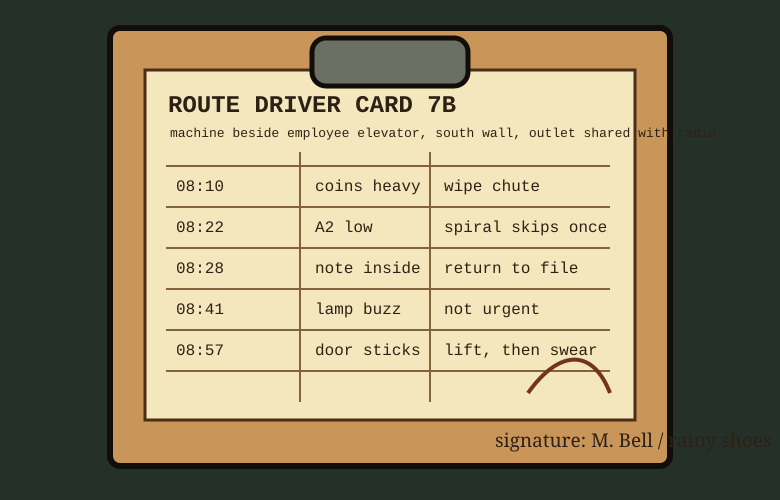

The driver card was written for speed: time, condition, correction. It does not explain the machine so much as continue an argument with it.

08:10 coins heavy; wipe chute. Nickel dust on thumb after count.
08:22 A2 low; crackers settling sideways. Replace front pack only, leave back row visible.
08:28 folded note inside return. File with Trench B material, not lost-and-found.
08:41 lamp buzz present but not urgent. Buzz changes pitch when elevator arrives.
08:57 door sticks. Lift, then swear. Swearing before lift has no mechanical value.
Card 7B ends with rainy shoes and a signature that looks like a receipt total. That is enough provenance for a machine that never cared about names.